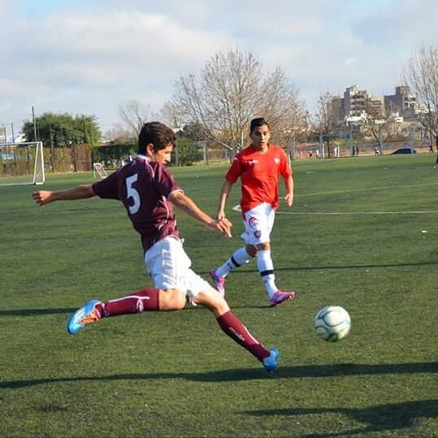
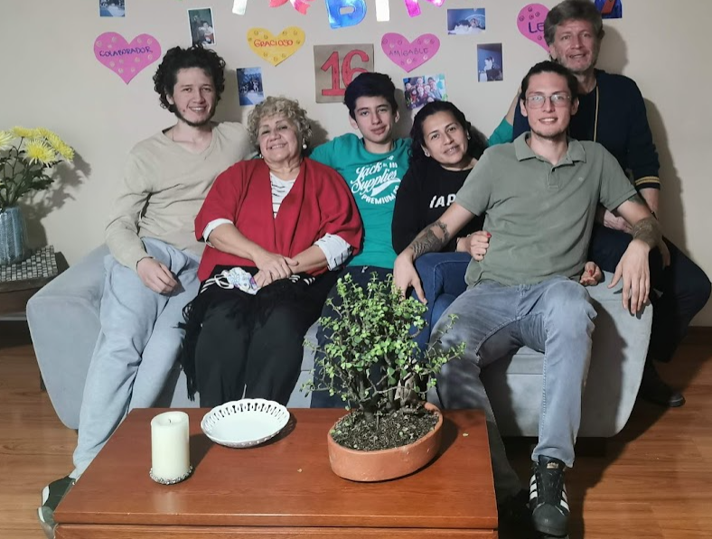
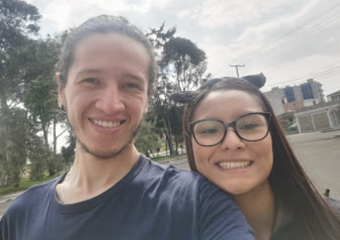

Sebastian Prieto Tovar
Civil Engineer / Frontend Developer
Civil Engineer / Frontend Developer
I was born in Bogota, Colombia on may 18th, 1995. I finished my highschool studies in the Agustiniano Tagaste school in Bogota. I have always loved to play soccer. It was my childhood dream to be professional soccer player. I played for some months in Lanus, an Argentinian soccer Team.
I came back to Colombia in August 2015 and started to think about studing in a university to obtain a professional degree. I started studying in the Universidad Catolica de Colombia in the Civil Engineering career. I finsihed my studies in 2022, and obtained a prostgraduate in Project Management and Leadership from the Universidad Autonoma del Estado de Puebla, Mexico. This was remote.

I live in Bogota, Colombia in a neighbourhood called Pio XII. I live with my girldfriend Daniela, we are together since 2019 and living since 2021. About my family. My mother Pilar, My father Hector, my brohters Santiago and Samuel, my grandmother Piedad and My aunt Claudia. They are the ones that have supported me though all the steps and have made.
Now I am focusing on continue learning different subjects that I like. For example, I like so much programming, that is why I have started learning different programming languages, such as Python and JacaScript. I have also plans on going abroad. Canada is a country that my girldfriend and I think a lot.
